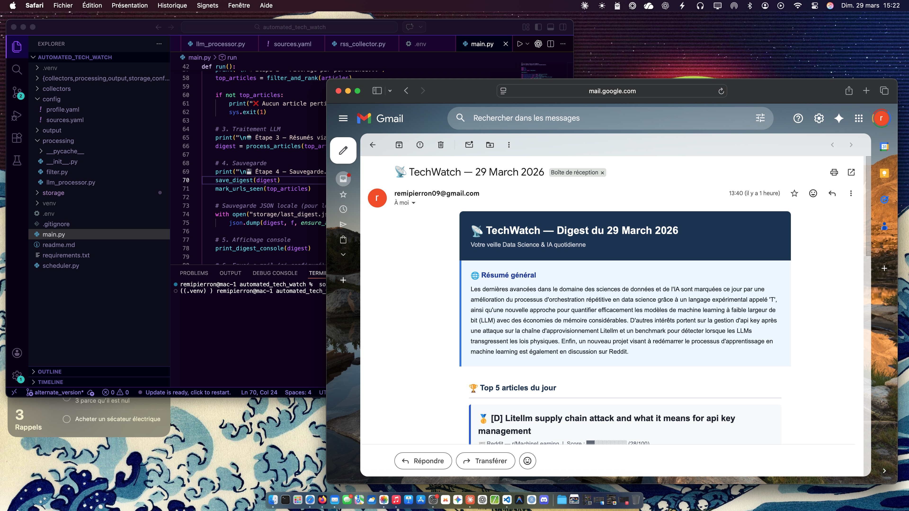

TechWatch est un outil personnel de veille informationnelle qui tourne de manière automatisée. Chaque jour, il parcourt les dernières publications technologiques sur le web, sélectionne les 5 articles les plus pertinents pour le profil de l'utilisateur, et produit un résumé général de l'actualité du moment. L'outil est pensé comme un digest quotidien intelligent, sans intervention manuelle.
Ce projet m'a permis de développer des compétences solides en Python, notamment dans l'utilisation de bibliothèques telles que BeautifulSoup pour le web scraping, et dans la manipulation d'API pour récupérer des données. J'ai également appris à implémenter des algorithmes de scoring pour évaluer la pertinence des articles, et à intégrer un LLM (Mistral) pour générer des résumés intelligents. Enfin, j'ai utilisé GitHub pour gérer le code source et suivre les évolutions du projet.